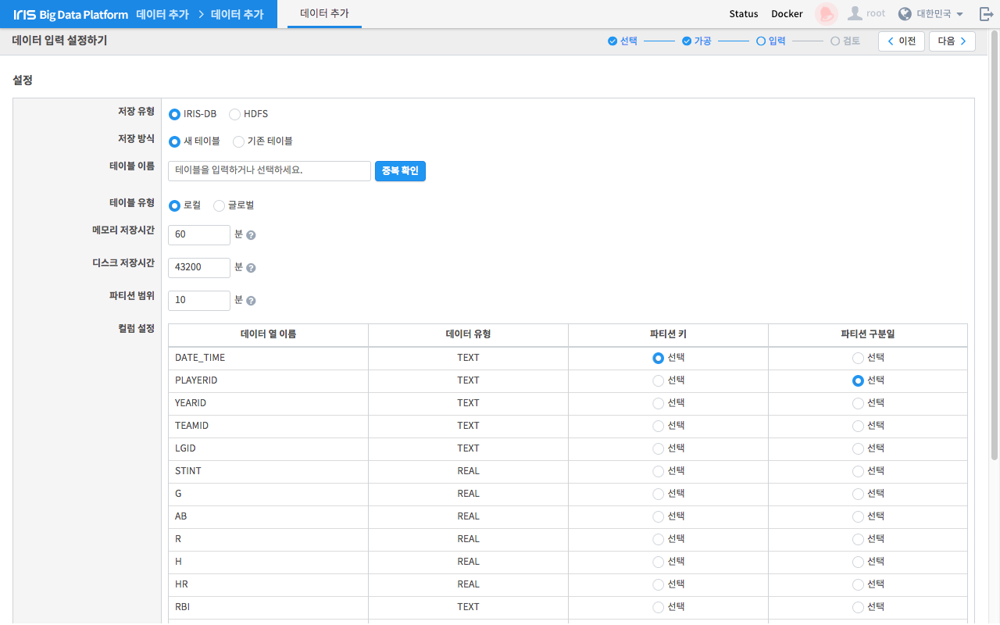
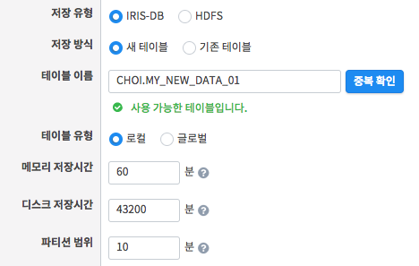
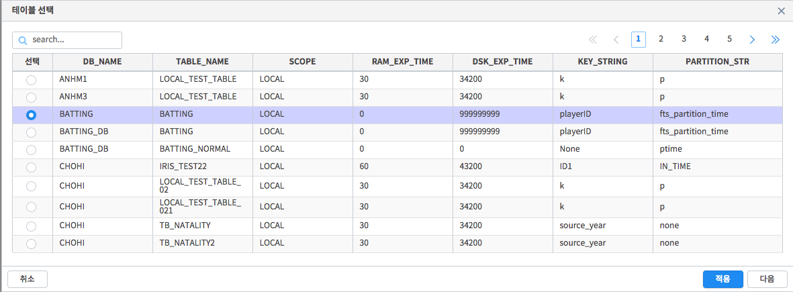
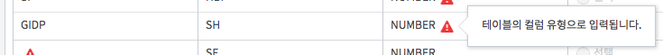
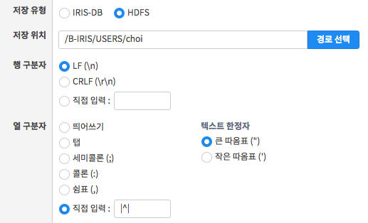

데이터 입력 설정¶
업로드할 위치에 따라 필요한 설정을 입력받습니다. 업로드 대상으로 IRIS-DB, HDFS 두 가지 중 하나를 선택할 수 있습니다. 대상에 따라 다른 조건을 입력해야 합니다.
번호 |
구분 |
설명 |
1 |
네비게이션 |
현재 작업 단계를 나타냅니다. |
2 |
이전/다음 버튼 |
단계를 이동합니다. 조건이 충족되어야 가능합니다. |
3 |
저장 유형 설정 |
저장 유형을 설정하는 버튼입니다. 유형 설정에 따라 4) 입력 설정 폼이 변경됩니다. |
4 |
입력 설정 폼 |
저장 유형에 따라 필요한 설정을 입력받습니다. |
IRIS-DB의 경우¶
IRIS-DB 유형의 경우, 기존 테이블 혹은 새로운 테이블을 생성하여 데이터를 입력하도록 설정할 수 있습니다. 새로운 테이블을 생성할 경우 테이블의 이름, 유형 및 기타 옵션들을 모두 입력해야 합니다.
기존 테이블의 경우 이미 존재하는 테이블에 데이터를 추가로 입력하는 것입니다. 테이블의 이름을 직접 입력하거나 아래와 같이 테이블을 목록에서 선택하여 기존 테이블의 정보를 불러오면 됩니다.
가공 작업의 결과 컬럼들이 해당 테이블과 일치하지 않으면 아래와 같이 경고 아이콘이 나타납니다.
HDFS의 경우¶
HDFS 유형의 경우, 지정한 경로에 csv 형태로 저장합니다. csv 형태의 파일로 저장하므로 행/열 구분자를 선택해야 합니다.
